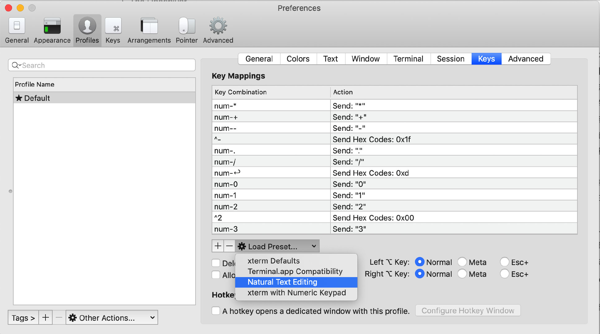

安装Mac
Mac下软件安装神器 brew
## 安装brew https://brew.sh/
$ brew search
$ brew list
$ brew install xxx
$ brew cask install xxx
$ brew cask install shadowsocksx charles wechat visual-studio-code
安装on-my-zsh
zsh关键字高亮插件 zsh-syntax-highlighting
brew install zsh-syntax-highlighting
source /usr/local/share/zsh-syntax-highlighting/zsh-syntax-highlighting.zsh
zsh-autosuggestions 自动提示插件
https://github.com/zsh-users/zsh-autosuggestions/blob/master/INSTALL.md#oh-my-zsh
快速预览插件
可以增强 Mac Finder 空格键预览的功能。
brew cask install qlmarkdown
brew cask install quicklook-json
brew cask install qlcolorcode
iTerm2启用词语选择
Enable word jumps and word deletion, aka natural text selection
By default, word jumps (option + → or ←) and word deletions (option + backspace) do not work. To enable these, go to "iTerm → Preferences → Profiles → Keys → Load Preset... → Natural Text Editing → Boom! Head explodes"

iPic
图床工具
动图制作工具
GIPHY CAPTURE

nvm
指定默认版本
nvm alias default 11.2.0
npm install xxx报 EACCESS,mkdir错误
~/.npm目录权限问题，
sudo chown -R $USER:$GROUP ~/.npm
npm cache clean
# 查看配置
$ npm config list
$ npm config list -l
# 设置代理
$ npm config set proxy http://127.0.0.1.8080
# 使用完毕
$ npm config set proxy null
vim 使用
配置 ~/.vimrc 文件：
"关闭兼容VI模式（可选项：compatible/nocompatible，若选择了compatible则tab不会转成空格）
set nocompatible
source $VIMRUNTIME/vimrc_example.vim
source $VIMRUNTIME/mswin.vim
"设置鼠标运行模式为WINDOWS模式
behave mswin
"开启语法高亮
syntax enable
"行号和标尺
set number
set ruler
set rulerformat=%15(%c%V\ %p%%%)
set relativenumber "设置相对行号
" 状态栏显示目前所执行的指令
set showcmd
" 缩进
set autoindent
set smartindent
" 自动重新读入
set autoread
快捷键：
# 移动光标
# 1. JKLH 分别代表 上下左右
# 编辑模式
# 1. 使用 i 在光标处插入（insert）， 使用 a 在光标后插入（append）
# 复制 和 粘贴
# 1. 将光标置于你想要复制的文字处
# 2. 使用 v 选择字符， V 选择整行
# 3. 移动光标到你要复制的文字结尾处
# 4. 使用 y 复制， d 剪切
# 5. 移动光标到任何你想要粘贴的地方
# 6. 使用 P 粘贴到光标前， p粘贴到光标后